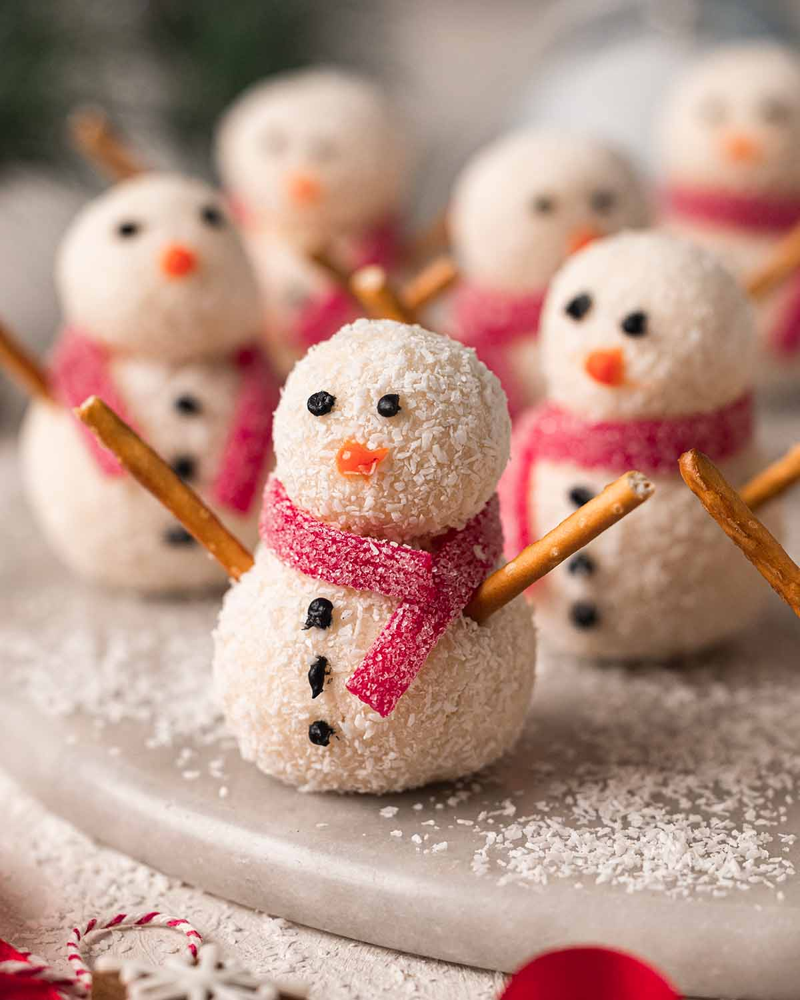

Snowman Truffles

These cute snowman truffles are easy and fun to prepare and are perfect for Christmas or Winter! They consist of 2-ingredient coconut truffles and store-bought decorations.
Ingredients
- dairy-free sweetened condensed milk
- coconut
- dairy-free white chocolate
- candy + pretzel sticks
- orange icing
- black icing
Steps
- The coconut truffles are easy to make as you just mix the sweetened condensed milk and coconut in a large bowl until combined. It's easiest to do this with a large wooden spoon or a hand mixer. Your final coconut mixture should be a little sticky and look really fluffy.
- Next, you'll need to roll balls of the coconut mixture between your palms.
- Next, place all your larger coconut truffles on a plate. Use melted white chocolate, pretzel sticks or toothpicks to stick the smaller coconut truffles on top.
- I used a small piping bag to draw the snowmen's eyes, nose and buttons. However, you can use a toothpick or a store-bought icing pen. As the snowmen are covered in dried coconut, the icing may not want to 'stick' on them so just do the best that you can!
- The snowmen are really cute without any additional decorations. However, you can also add arms and scarves, as pictured below. If your pretzels or candy scarves aren't sticking, use some white chocolate to 'glue' them to the snowmen. Most importantly, don't stress and have fun with it!